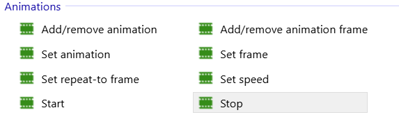
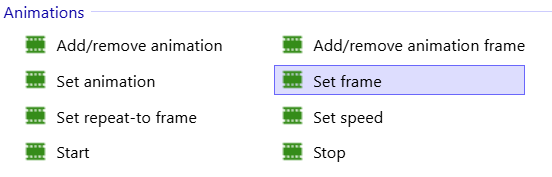
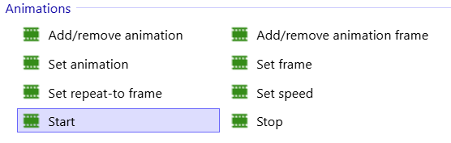

5B · Stop it when the alien starts running
| Event | Condition (left side) | Actions (right side) |
|---|
| 2 | Player → Platform → On moved | Player → Stop
Player → Set frame → 0 |
- Click the Event sheet 1 tab. Click Add event at the bottom of the sheet → double-click Player → find the Animation triggers group and double-click On moved. It appears as event 2, with a small green arrow beside it.
- On event 2, click the grey Add action → Player → double-click Stop (in the Animations group, bottom right).

- Click the grey Add action under it → Player → Set frame (same Animations group, right column).

Type 0 and click Done. Event 2 now has two actions.
- Preview. The alien bounces at the start. Run, and it switches to the standing pose. Stop, and it stays standing: nothing starts the animation again yet.
Pick the right one: use On moved, not Is moving. A green arrow means a trigger: it runs once, the moment something happens. Is moving is checked every frame, and on the ground it can stay true, which freezes the alien.
5C · Start it again when the alien stops
| Event | Condition (left side) | Action (right side) |
|---|
| 3 | Player → Platform → On stopped | Player → Start → From beginning |
- Click Add event → double-click Player → in Animation triggers, double-click On stopped. It appears as event 3.
- On event 3, click the grey Add action → Player → Start (Animations group, left column, bottom).

Set From to beginning and click Done.
- Preview. Stand still: the alien bounces through its five poses. Run: it holds the standing pose. Stop: it starts bouncing again.
In words: when the alien starts running, stop the bounce on the standing pose; when it stops, play the bounce again. Each trigger runs once, at that moment, so the animation is left to play in between. If the alien jumps straight up without running, it keeps bouncing in the air; that's fine.